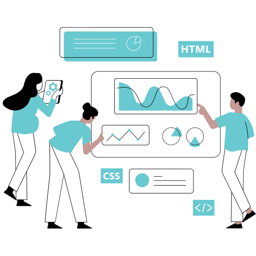

Ciclo de vida de produtos
O Ciclo de Vida do Produto é uma ferramenta administrativa que permite analisar como um produto se comporta desde o seu desenvolvimento até a retirada do mercado, levando em conta ainda seu lançamento, crescimento e maturidade em vendas.
As 5 Fases do Ciclo de Vida do Produto
1. Desenvolvimento
Consiste em um projeto ainda preso ao campo das ideias. Você pode ter grande expectativa sobre ele, mas para que comece a gerar receitas ainda é preciso lapidar sua proposta, realizar testes, validar as hipóteses levantadas e fazer ajustes.
2. Introdução
É quando o produto passa por todos os critérios de desenvolvimento e é considerado pronto para ser lançado no mercado. Diariamente, somos apresentados a novos itens que se encaixam nesse estágio do ciclo.
3. Crescimento
Suas características principais estão nas vendas escaláveis e na manutenção dos valores investidos em marketing. Em quanto tempo isso acontece, não é possível precisar, pois depende muito das particularidades do produto em si e do mercado no qual está inserido.
4. Maturidade
A maturidade é o pico, o ponto alto do Ciclo de Vida de um Produto. É quando ele alcança o seu máximo potencial e suas vendas se estabilizam. Após bater no teto, não é mais possível crescer, mas a empresa pode atuar de modo a evitar retrocessos significativos
5. Declínio
É quando o produto passa por todos os critérÉ curioso até imaginar o fim da Coca-Cola, uma empresa centenária e de tanto sucesso junto ao público. Mas até ela vai acabar um dia. Talvez não a empresa, mas seu produto principal. Pode demorar 100, 200 ou até 1.000 anos. É impossível saber. Mas todo produto chega ao fim e encerra seu ciclo de vida. Nesses casos, cabe à empresa fazer o doloroso reconhecimento a partir de seus indicadores de desempenho e preparar a substituição do item em questão. Se tudo contribui para a ideia de descontinuidade, investir pesado em marketing para tentar reverter o quadro tende a ser perigoso demais.
Por Que é Importante Entender o Ciclo de Vida do Produto
- Permite a tomada de decisão melhor embasada
- Otimiza os investimentos em marketing
- Qualifica os esforços de vendas
- Maior controle sobre os resultados
- Planejamento estratégico no longo prazo
- Melhor organização e gestão de processos
- Maior longevidade de produtos
- Preparação mais adequada para encarar a concorrência
- Liderar o mercado torna-se um objetivo palpável.